Predator–prey dynamics#
This chapter follows on from the Competitive dynamics chapter and applies the same analytical toolkit to consumer–resource / predator–prey interactions.
We start with the classical Lotka–Volterra predator–prey model, then add increasingly realistic biology: harvesting (D’Ancona), prey self‑limitation, predator saturation (Holling type II), the Rosenzweig–MacArthur model, the paradox of enrichment, and a simple two‑patch spatial extension.
References: Lotka [1925]; Volterra [1926]; Holling [1959]; Rosenzweig and MacArthur [1963]; Rosenzweig [1971].
Note
Conventions used here
Prey (victim) density: \(V(t)\)
Predator density: \(P(t)\)
Time in arbitrary units unless stated.
import numpy as np
import matplotlib.pyplot as plt
from scipy.integrate import solve_ivp
from numpy.linalg import eigvals
Lotka–Volterra predator–prey model#
Model and assumptions#
The classical Lotka–Volterra (LV) predator–prey model is (Lotka [1925]; Volterra [1926]):
Parameters:
\(r\): prey intrinsic growth rate (time\(^{-1}\))
\(a\): attack (capture) rate (predator\(^{-1}\) time\(^{-1}\), depending on units of \(V,P\))
\(b\): conversion efficiency (prey → predator births; dimensionless if \(V,P\) share units)
\(q\): predator mortality rate (time\(^{-1}\))
Key assumptions (non‑exhaustive):
no prey density dependence
linear (Type I) functional response
no structure (age/space), no delays
A useful geometric tool is the nullclines:
\(\dot V=0 \Rightarrow P = r/a\) (for \(V>0\))
\(\dot P=0 \Rightarrow V = q/b\) (for \(P>0\))
Their intersection is the coexistence equilibrium.
def lv_rhs(t, y, r, a, b, q):
V, P = y
return [r*V - a*V*P, b*V*P - q*P]
def lv_nullclines(r, a, b, q):
# returns (V* for predator nullcline, P* for prey nullcline)
return q/b, r/a
def integrate(rhs, y0, t_end=50, args=(), n=2000):
t_eval = np.linspace(0, t_end, n)
sol = solve_ivp(lambda t,y: rhs(t,y,*args), (0, t_end), y0, t_eval=t_eval,
rtol=1e-9, atol=1e-12)
return sol.t, sol.y
# Example LV simulation
r, a, b, q = 1.5, 1.0, 1.0, 1.5
V0, P0 = 2.0, 0.5
t, (V, P) = integrate(lv_rhs, [V0, P0], t_end=60, args=(r,a,b,q))
Vstar, Pstar = lv_nullclines(r,a,b,q)
plt.figure()
plt.plot(t, V, label="V(t)")
plt.plot(t, P, label="P(t)")
plt.xlabel("t"); plt.ylabel("density")
plt.title("Lotka–Volterra time series (example)")
plt.legend()
plt.show()
plt.figure()
plt.plot(V, P, label="trajectory")
plt.axvline(Vstar, linestyle="--", label="V nullcline (V=q/b)")
plt.axhline(Pstar, linestyle="--", label="P nullcline (P=r/a)")
plt.plot([Vstar],[Pstar], marker="o", linestyle="none", label="equilibrium")
plt.xlabel("V"); plt.ylabel("P")
plt.title("Phase plane for Lotka–Volterra (example)")
plt.legend()
plt.show()
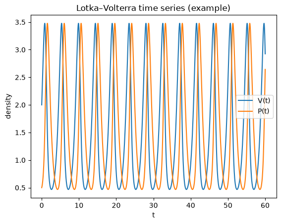
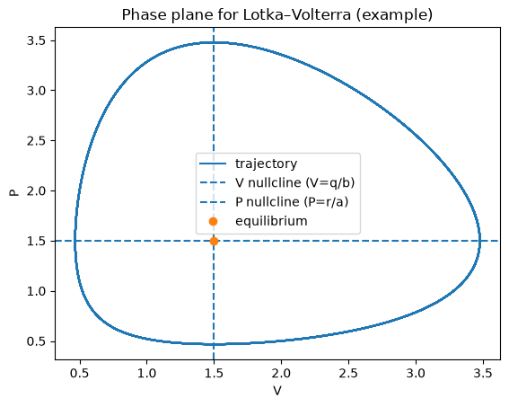
Equilibria and (non‑)robustness#
The coexistence equilibrium is
Linearising about \((V^*,P^*)\) gives purely imaginary eigenvalues in the classical LV model (a neutrally stable centre). Consequently:
trajectories form closed orbits
oscillation amplitude depends on initial conditions
small model changes can make the equilibrium stable (damped oscillations) or unstable (growing oscillations)
This motivates adding more realistic processes: prey self‑limitation, predator saturation, space, etc.
LV with fishing (D’Ancona)#
A simple way to represent fisheries is to add proportional harvesting to both populations:
Nullclines:
\(\dot V=0 \Rightarrow P = (r-f)/a\)
\(\dot P=0 \Rightarrow V = (q+f)/b\)
So fishing shifts the coexistence equilibrium to
as long as \(r>f\) (otherwise predators cannot persist).
Interpretation (D’Ancona): If fishing pressure drops (smaller \(f\)), predators increase and prey decrease at equilibrium.
def lv_fish_rhs(t, y, r, a, b, q, f):
V, P = y
return [(r-f)*V - a*V*P, b*V*P - (q+f)*P]
def fish_equilibrium(r,a,b,q,f):
return (q+f)/b, (r-f)/a
r,a,b,q,f = 1.5,1,1,1.5,1.0
t,(V,P)=integrate(lv_fish_rhs,[1.0,0.5],t_end=80,args=(r,a,b,q,f))
Vstar,Pstar = fish_equilibrium(r,a,b,q,f)
plt.figure()
plt.plot(t,V,label="V")
plt.plot(t,P,label="P")
plt.xlabel("t"); plt.ylabel("density")
plt.title("LV with fishing: time series (example)")
plt.legend(); plt.show()
plt.figure()
plt.plot(V,P,label="trajectory")
plt.axvline(Vstar,linestyle="--",label="V*=(q+f)/b")
plt.axhline(Pstar,linestyle="--",label="P*=(r-f)/a")
plt.plot([Vstar],[Pstar],marker="o",linestyle="none",label="equilibrium")
plt.xlabel("V"); plt.ylabel("P")
plt.title("LV with fishing: phase plane")
plt.legend(); plt.show()
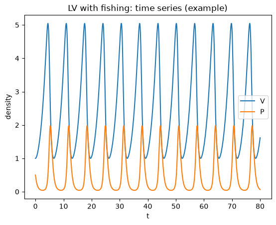
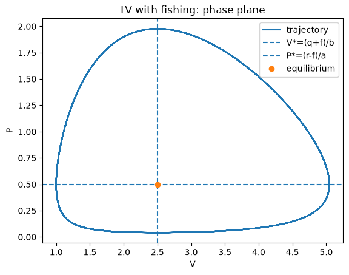
Prey density dependence (logistic prey)#
Add prey self‑limitation by replacing prey growth with logistic growth:
This tends to stabilise the dynamics relative to classical LV. There are two biologically relevant equilibria:
predator extinction: \((V,P)=(K,0)\)
coexistence (if feasible): \(V^*=q/b\), \(P^*=\frac{r}{a}\left(1-\frac{q}{bK}\right)\)
Feasibility requires \(K>q/b\).
def lv_logistic_rhs(t, y, r, K, a, b, q):
V, P = y
return [r*V*(1 - V/K) - a*V*P, b*V*P - q*P]
def coexist_eq_logistic(r,K,a,b,q):
Vstar = q/b
Pstar = (r/a)*(1 - Vstar/K)
return Vstar, Pstar
r,K,a,b,q = 1.5, 10.0, 1.0, 1.0, 1.5
t,(V,P) = integrate(lv_logistic_rhs,[2.0,0.5],t_end=120,args=(r,K,a,b,q))
Vstar,Pstar = coexist_eq_logistic(r,K,a,b,q)
plt.figure()
plt.plot(t,V,label="V")
plt.plot(t,P,label="P")
plt.xlabel("t"); plt.ylabel("density")
plt.title("Logistic prey (stabilising): example time series")
plt.legend(); plt.show()
plt.figure()
plt.plot(V,P,label="trajectory")
plt.plot([Vstar],[Pstar],marker="o",linestyle="none",label="coexistence equilibrium")
plt.xlabel("V"); plt.ylabel("P")
plt.title("Logistic prey: phase plane (example)")
plt.legend(); plt.show()
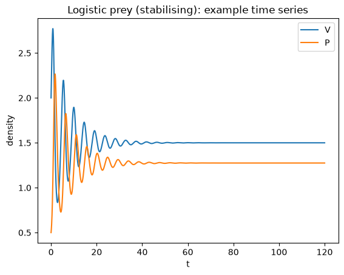
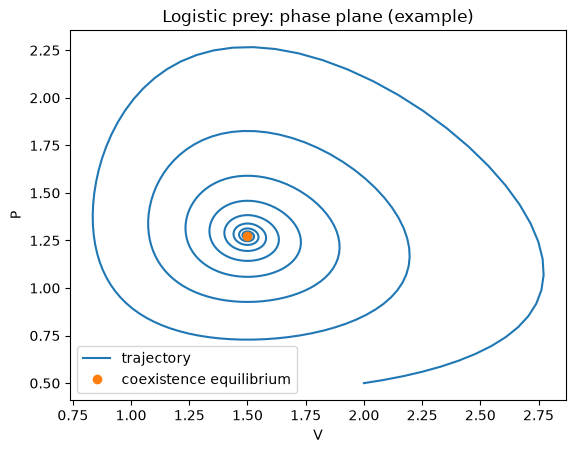
Holling type II response and the Rosenzweig–MacArthur model#
Predators may saturate at high prey density due to handling time \(h\). Holling type II functional response replaces \(aV\) by:
A standard predator–prey model combining logistic prey growth and Holling II is the Rosenzweig–MacArthur (R–M) model:
For small/moderate \(K\), the coexistence equilibrium is stable; for larger \(K\) it can lose stability in a Hopf bifurcation, producing a stable limit cycle.
This gives the paradox of enrichment: increasing \(K\) (making the prey’s environment richer) can destabilise the system and increase oscillation amplitude, raising extinction risk in realistic settings.
def rm_rhs(t, y, r, K, a, h, b, q):
V, P = y
pred = (a*V*P)/(1 + a*h*V)
return [r*V*(1 - V/K) - pred, b*pred - q*P]
def simulate_rm(K, a=1, b=1, h=1.25, q=0.1, r=1.0, y0=(0.5,0.01), t_end=200):
t_eval = np.linspace(0, t_end, 6000)
sol = solve_ivp(lambda t,y: rm_rhs(t,y,r,K,a,h,b,q), (0,t_end), list(y0),
t_eval=t_eval, rtol=1e-9, atol=1e-12)
return sol.t, sol.y
# Compare two K values (used again in practical)
t1,(V1,P1)=simulate_rm(K=0.5, y0=(0.5,0.01), t_end=200)
t2,(V2,P2)=simulate_rm(K=1.25, y0=(1.25,0.01), t_end=200)
plt.figure()
plt.plot(t1,V1,label="V (K=0.5)")
plt.plot(t1,P1,label="P (K=0.5)")
plt.xlabel("t"); plt.ylabel("density")
plt.title("R–M: time series (K=0.5)")
plt.legend(); plt.show()
plt.figure()
plt.plot(V1,P1,label="trajectory (K=0.5)")
plt.xlabel("V"); plt.ylabel("P")
plt.title("R–M: phase plane (K=0.5)")
plt.legend(); plt.show()
plt.figure()
plt.plot(t2,V2,label="V (K=1.25)")
plt.plot(t2,P2,label="P (K=1.25)")
plt.xlabel("t"); plt.ylabel("density")
plt.title("R–M: time series (K=1.25)")
plt.legend(); plt.show()
plt.figure()
plt.plot(V2,P2,label="trajectory (K=1.25)")
plt.xlabel("V"); plt.ylabel("P")
plt.title("R–M: phase plane (K=1.25) — limit cycle (after transients)")
plt.legend(); plt.show()
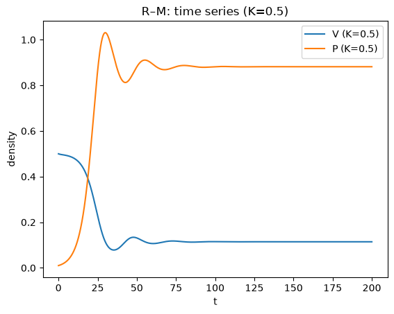
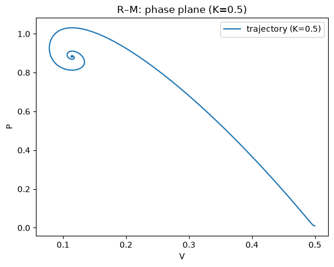
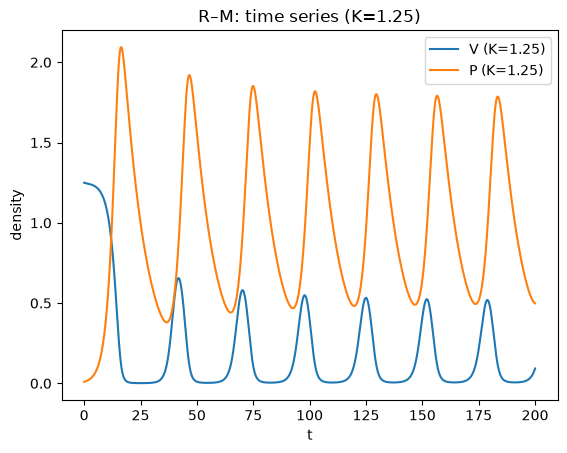
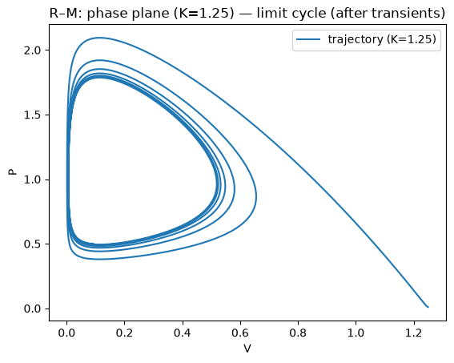
A simple numerical “bifurcation diagram” in \(K\)#
We can emulate a 1‑parameter bifurcation diagram by:
choosing a grid of \(K\) values
integrating long enough for transients to decay
sampling the long‑run prey values
If the dynamics converge to equilibrium, points collapse to a line. If a stable limit cycle exists, points fill out the range between cycle minima and maxima.
def rm_bifurcation_points(K_values, a=1, b=1, h=1.25, q=0.1, r=1.0,
burn=400, sample=200, step=0.2, y0=(0.2,0.01)):
Ks=[]
Vs=[]
# continuation-like: reuse final state as next initial condition for numerical stability
y=list(y0)
for K in K_values:
t_end = burn + sample
t_eval = np.arange(0, t_end+step, step)
sol = solve_ivp(lambda t,yy: rm_rhs(t,yy,r,K,a,h,b,q),
(0,t_end), y, t_eval=t_eval, rtol=1e-8, atol=1e-10)
V = sol.y[0]
y = [sol.y[0,-1], sol.y[1,-1]]
# collect points from last 'sample' time
mask = sol.t >= burn
Ks.extend([K]*np.sum(mask))
Vs.extend(list(V[mask]))
return np.array(Ks), np.array(Vs)
Kvals = np.linspace(0.1, 2.5, 70)
Ks, Vs = rm_bifurcation_points(Kvals)
plt.figure()
plt.plot(Ks, Vs, marker=".", linestyle="none", markersize=2)
plt.xlabel("K"); plt.ylabel("Prey V (long-run samples)")
plt.title("R–M: numerical bifurcation diagram in K (prey samples)")
plt.show()
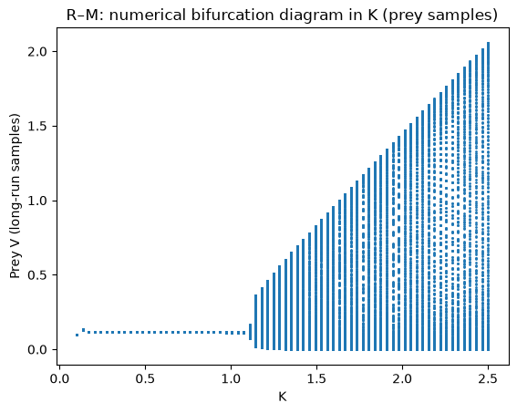
Space: two coupled patches#
A minimal spatial extension is to couple two identical patches with predator dispersal:
Patch \(i\) has \((V_i,P_i)\) following R–M dynamics; predators disperse at rate \(d\):
This is a 4D system. We typically visualise:
time series of totals (\(V_1+V_2\), \(P_1+P_2\))
a 2D projection, e.g. \((V_1,P_1)\) or \((V_1+V_2, P_1+P_2)\)
sometimes log‑totals to show behavior near very small values
def rm2patch_rhs(t, y, r, K, a, h, b, q, d):
V1, P1, V2, P2 = y
pred1 = (a*V1*P1)/(1 + a*h*V1)
pred2 = (a*V2*P2)/(1 + a*h*V2)
dV1 = r*V1*(1 - V1/K) - pred1
dV2 = r*V2*(1 - V2/K) - pred2
dP1 = b*pred1 - q*P1 + d*(P2-P1)
dP2 = b*pred2 - q*P2 + d*(P1-P2)
return [dV1, dP1, dV2, dP2]
def simulate_rm2(K, d=0.42, h=0.1, a=1, b=1, q=1, r=0.05,
y0=(None, 0.01, None, 0.02), t_end=300, step=2.0,
method="LSODA", rtol=1e-6, atol=1e-9):
if y0[0] is None or y0[2] is None:
y0 = (K, y0[1], K, y0[3])
t_eval = np.arange(0, t_end + step, step)
sol = solve_ivp(
lambda t, y: rm2patch_rhs(t, y, r, K, a, h, b, q, d),
(0, t_end), list(y0), t_eval=t_eval, method=method, rtol=rtol, atol=atol,
)
return sol.t, sol.y
# A quick illustration at moderate K (kept short for fast book builds)
t, (V1, P1, V2, P2) = simulate_rm2(K=14, t_end=300, step=2.0)
Vtot = V1 + V2
Ptot = P1 + P2
plt.figure()
plt.plot(t, Vtot, label="V1+V2")
plt.plot(t, Ptot, label="P1+P2")
plt.xlabel("t"); plt.ylabel("total density")
plt.title("Two-patch R–M: totals over time (K=14)")
plt.legend(); plt.show()
plt.figure()
plt.plot(V1, P1, label="(V1,P1) projection")
plt.xlabel("V1"); plt.ylabel("P1")
plt.title("Two-patch R–M: phase projection (K=14)")
plt.legend(); plt.show()
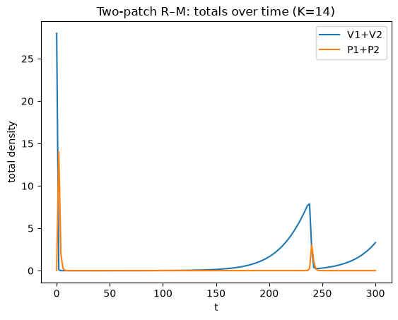
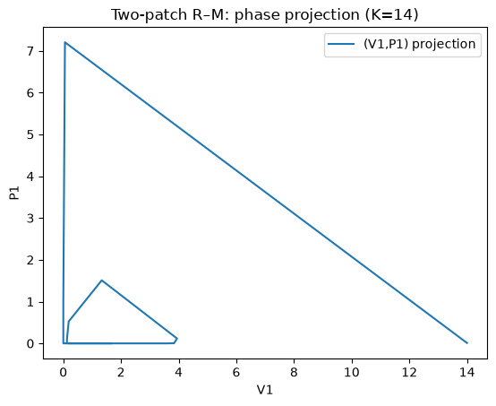
Summary#
The Lotka–Volterra predator–prey model produces neutrally stable cycles around a coexistence equilibrium; oscillation amplitude depends on initial conditions, so small model changes can qualitatively change stability.
Adding harvesting shifts nullclines and the coexistence equilibrium; in the simple symmetric-harvest form, lowering fishing pressure increases predators and decreases prey at equilibrium (D’Ancona-style effect).
Prey self-limitation (logistic growth) and predator saturation (Holling type II) are biologically motivated mechanisms that often stabilise dynamics at low enrichment, but can also generate stable limit cycles via a Hopf bifurcation (Rosenzweig–MacArthur).
The paradox of enrichment highlights that increasing prey carrying capacity \(K\) can destabilise consumer–resource dynamics, increasing oscillation amplitude and (in realistic settings) extinction risk.
Spatial structure (e.g. two coupled patches with dispersal) can change outcomes by desynchronising dynamics across space and buffering local crashes.